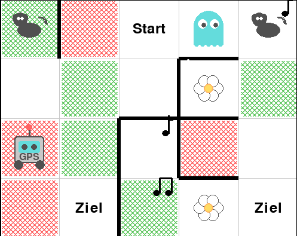

CustomGrid Environment 🤖👻¶

An advanced Gymnasium-based grid environment for Reinforcement Learning and Robotics tutorials, used in the AI lecture at TH Köln. CustomGrid features an agent navigating a stochastic environment with imperfect sensors, adversarial elements, and complex state estimation.
🎯 Goal of the Environment¶
The primary goal of this environment is to teach students how to develop an autonomous agent capable of achieving complex tasks defined by a user. These tasks may include visiting specific cells identified by visual or acoustic stimuli in an optimal order and returning to the starting position, often beginning from an unknown location.
A key challenge is the integration of multiple modules—such as Speech-to-Text for task understanding, Vision/Acoustic sensors for identification, and Bayesian filters for localization—to allow the agent to solve high-level goals (e.g., "Visit the dog, then the goal").
🌟 Key Features¶
- Turn-Based Adversarial Gameplay: Compete against a ghost in a 4x5 grid.
- Adversarial Search: Integrated Minimax and Expectimax agents for strategic planning.
- Stochastic Movement: Realistic physics with Perpendicular and Longitudinal slipping.
- Imperfect Perception:
- Noisy Color Sensor: Ground color detection with 80% accuracy.
- CNN-Based Vision: Real-time item classification using a trained CNN.
- State Estimation: Integrated Particle Filter for Bayesian localization.
- Interactive Visualization:
- Rich Pygame-based renderer.
- Interactive Google Colab GUI with real-time 2D probability distribution.
- Customizable Ghost AI: Switch between shortest-path chasing, random movement, and minimax.
📓 Interactive Notebooks¶
Experience the environment directly in your browser:
| Notebook | Description | Link |
|---|---|---|
| Interactive GUI | Full dashboard with sensors and PF visualization. | |
| Environment Demo | Basic programmatic interaction and API walkthrough. | |
| CNN Training | Tutorial on training the vision model. |
🚀 Quick Start¶
Installation¶
Basic Usage¶
from custom_grid_env.interface import AgentInterface
from custom_grid_env.agents.adversarial_agents import MinimaxAgent
# Initialize the interface with Particle Filter and rendering
interface = AgentInterface(render=True, slip_probability=0.2)
obs = interface.reset()
agent = MinimaxAgent(interface.get_action_space(), env=interface.env, depth_limit=4)
while not interface.is_terminated():
action = agent.get_action(obs)
obs, reward, done, info = interface.step(action)
# Access estimated position from Particle Filter
est_pos = info['estimated_pos']['cell_pos']
print(f"Estimated Position: {est_pos}")
interface.close()